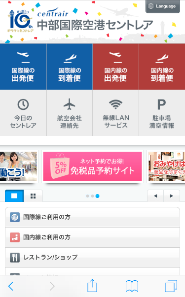

<ons-page ng-controller="OfficialController">
    <!-- メニュー上部のツールバー -->
    <ons-toolbar>
        <div class="right"><!-- サイドバーを開くボタン -->
            <ons-toolbar-button ng-click="menu.toggleMenu()"><ons-icon icon="ion-navicon" style="font-size: 32px; width: 1em;"></ons-icon></ons-toolbar-button>
        </div>
        <div class="center">公式サイト</div><!-- ページタイトル -->
    </ons-toolbar>
    <!-- end/メニュー上部のツールバー -->
    <div class="app" ng-controller="WebViewController">
        <!---->
        <!--<ul id="shop_list">
        </ul>-->
    </div>
</ons-page>